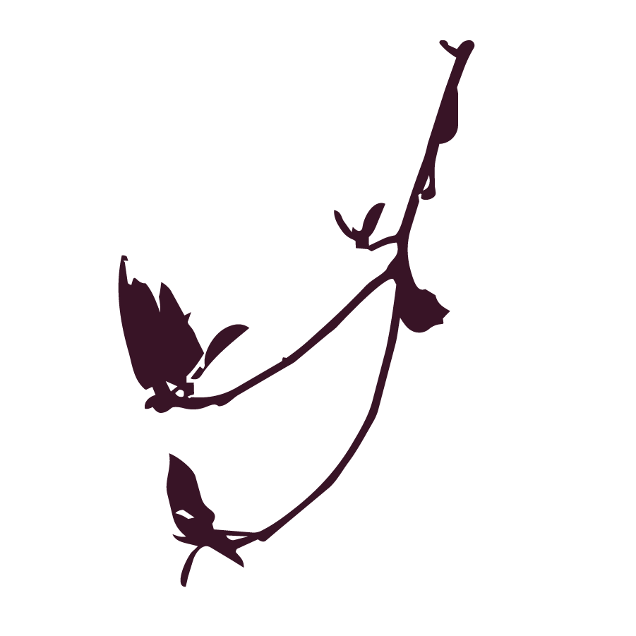

ACKNOWLEDGE THE FULFILMENT IN THE NON-POSITIVE. TODAY’S DIGITAL TECHNOLOGY CREATES A SOCIETY THAT IS IN ‘PURSUIT OF HAPPINESS’, IN AWE OF POSITIVITY. (AS A COUNTERWEIGHT OF THE NEGATIVITY IT PRODUCES?) SMOOTHNESS DOESN’T INJURE. IT DOESN’T PRODUCE RESISTANCE. IT ENFORCES THE LIKE. THESE MECHANISMS FEED OUR DESIRE FOR ATTENTION AND BEING SEEN. DESIGNING FRICTION CHERISHES THE NON-POSITIVE, THE ‘DIGITAL UNSEEN’, THE DISAGREEMENT, THE DOUBT, THE VULNERABLE, THE COMPLICATED. THIS IS WHAT MAKES US HUMAN.